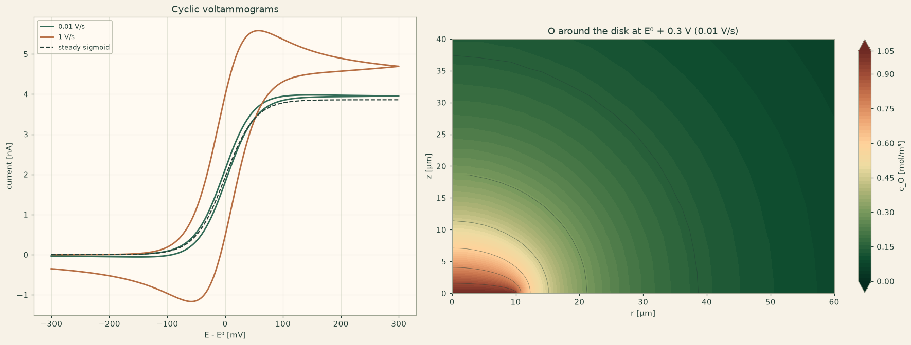
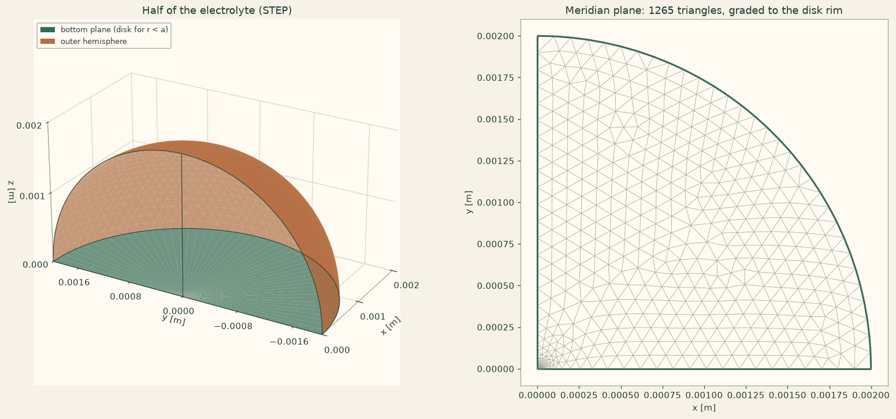

Docs › Examples › Cyclic voltammetry at a microdisk electrode
Electrochemistry · 2D-axisymmetric
Cyclic voltammetry at a microdisk electrode
A 10 um disk electrode in an insulating plane oxidises a redox species that reaches it by hemispherical diffusion; slow sweeps give a steady sigmoidal wave, fast sweeps a peaked one.
Run locally with OneSimulation. The example downloads are free. Running them requires an activated runtime. Runtime Alpha 0.2.1a7 · CPython 3.13 on macOS (Apple Silicon), Ubuntu 22.04 (x86-64), and Windows x64. Installation and activation · View pilot plans. Scope of the reference checks.


What it computes
OneSimulation reads the electrolyte from a STEP file, cuts its meridian plane and solves the diffusion of both species with quadratic axisymmetric elements and the Butler-Volmer rate as a nonlinear surface reaction, for sweeps at 0.01 and 1 V/s; the current is the boundary flux of the recorded states. The script that builds the STEP file comes with the notebook.
What it checks
The plateau of the slow sweep is 1.0244 times Saito's limiting current 4FDca, 0.35 % above the 1.0208 expected with the decaying Shoup-Szabo transient; the half-wave potential lies 4 mV from E0 and E3/4 - E1/4 = 54 mV (56.4 mV reversible); at 1 V/s the forward peak rises to 1.45 times the steady current.
Geometry
The notebook starts at the import of the CAD files microdisk_electrode_voltammetry.step, microdisk_electrode_voltammetry_core.step: STEP (AP242), readable by any CAD program, with the names of the faces that the boundary conditions use. Put them next to the notebook.


The geometry script
The script microdisk_electrode_voltammetry_geometry.py builds the geometry with the CAD objects of OneSimulation and writes the files. Change a dimension there, run it, and run the notebook again.
"""Geometry of the OneSimulation example "Voltammetry at a microdisk electrode".
Builds the electrolyte above a disk electrode of radius 10 µm set flush in an insulating plane, a
hemisphere of radius 2 mm, as half a solid of revolution about the z axis with the CAD objects of
OneSimulation and writes microdisk_electrode_voltammetry.step with the faces disk (the bottom
plane), insulator and outer. A small cylinder of the disk radius above the electrode is written to
microdisk_electrode_voltammetry_core.step; the mesh embeds it, so that a mesh vertex sits on the rim
of the disk.
"""
import numpy as np
from onesim.cad.d2 import Path, Profile, Segment
from onesim.cad.d3 import Revolution
disk, outer = 10e-6, 2e-3
outline = Path(
(0.0, 0.0),
(
Segment((disk, 0.0), name="disk"),
Segment((outer, 0.0), name="insulator"),
Segment((0.0, outer), center=(0.0, 0.0), name="outer"),
Segment((0.0, 0.0), name="axis"),
),
)
Revolution(profile=Profile(outline), angle=np.pi).rotated((0, 0, 1), -np.pi / 2).save(
"microdisk_electrode_voltammetry.step"
)
core = Path(
(0.0, 0.0),
(
Segment((disk, 0.0)),
Segment((disk, disk)),
Segment((0.0, disk)),
Segment((0.0, 0.0)),
),
)
Revolution(profile=Profile(core), angle=np.pi).rotated((0, 0, 1), -np.pi / 2).save(
"microdisk_electrode_voltammetry_core.step"
)The notebook
The complete notebook, cell by cell. Run it to produce the figures and the comparison printout.
Microelectrodes reach a steady current within seconds because the diffusion field around them becomes hemispherical: the supply no longer decays as \(t^{-1/2}\) as at a large electrode. For a disk of radius \(a\) in an insulating plane the species diffuse in the axisymmetric meridian plane \((r,z)\),
and the oxidation \(\mathrm R\to\mathrm O+e^-\) on the disk follows Butler-Volmer kinetics, \(r=k^0\big[c_\mathrm R e^{(1-\alpha)f(E-E^0)}-c_\mathrm O e^{-\alpha f(E-E^0)}\big]\) with \(f=F/RT\).
| boundary | O | R |
|---|---|---|
disk, \(r<a\) (electrode) | produced at the rate \(r\) | consumed at the rate \(r\) |
disk, \(r>a\) (insulating plane), axis | no flux | no flux |
outer hemisphere, 2 mm | \(c_\mathrm O=0\) | \(c_\mathrm R=c^\infty\) |
Setup. 1 mM of R, \(D=10^{-9}\) m²/s, fast kinetics (\(k^0=0.1\) m/s, \(\alpha=0.5\)), 25 °C. The electrolyte, a hemisphere of 2 mm radius, comes from the CAD file microdisk_electrode_voltammetry.step, written by microdisk_electrode_voltammetry_geometry.py with the CAD objects of OneSimulation; at 200 disk radii the bulk boundary changes the steady current by about \(2a/(\pi\cdot 200a)=0.3\) %.
Reference. The steady limiting current \(i_\mathrm{ss}=4FDc^\infty a\) (Y. Saito, Rev. Polarogr. Jpn. 15 (1968) 177); its approach after the wave has passed follows \(i/i_\mathrm{ss}=0.7854+0.8862\,\tau^{-1/2}+0.2146\,e^{-0.7823\,\tau^{-1/2}}\), \(\tau=4Dt/a^2\) (D. Shoup, A. Szabo, J. Electroanal. Chem. 140 (1982) 237); and for a reversible couple with equal diffusivities the steady sigmoid \(i=i_\mathrm{ss}/\big(1+e^{-f(E-E^0)}\big)\) (Bard and Faulkner, Electrochemical Methods, §5.3).
import numpy as np
from onesim.cad.exchange import load
from onesim.meshing import TriangularMesher
from onesim.numerics import Numerics
from onesim.numerics.fem import FiniteElement, Lagrange, RevolvedH1SpaceFactory
from onesim.numerics.linear import SparseDirect
from onesim.numerics.nonlinear import Newton
from onesim.numerics.time import BDF, BackwardEuler
from onesim.physics.chemistry import (
FixedConcentration,
SpeciesTransport,
SurfaceReaction,
TransportSpecies,
)
from onesim.simulation import Problem, Simulation
from onesim.simulation.initial_conditions import InitialValue
from onesim.visualization import plots, theme
theme.set()Geometry and mesh
section with the plane \(y=0\) returns the meridian quarter disc; the faces keep their names. The 10 µm wide disk face does not survive the STEP round trip as a face of its own (it comes back merged with the insulating plane as disk), so the reaction below is declared on all walls except the outer hemisphere and switched on for \(r<a\), \(z=0\); the mesh embeds the small core cylinder to place a vertex exactly on the rim. The triangles shrink to 0.25 µm over the disk, so that the early depletion layer and the singular flux at its rim are resolved.
electrolyte = load("microdisk_electrode_voltammetry.step")
plane = electrolyte.section((0, 1, 0))
core = load("microdisk_electrode_voltammetry_core.step").section((0, 1, 0))
side = plane.boundaries
radius, outer = 10e-6, plane.size[0]
mesh = TriangularMesher(
target_size=outer / 20,
embedded_regions=(core,),
size_field=lambda p: np.minimum(
outer / 20,
radius / 40 + 0.3 * np.hypot(np.maximum(p[:, 0] - radius, 0.0), p[:, 1]),
),
).generate(plane)
fig = plots.figure(1, 2, size=(15, 6.5))
plots.geometry(
electrolyte,
selection={
"bottom plane (disk for r < a)": electrolyte.boundaries.disk,
"outer hemisphere": electrolyte.boundaries.outer,
},
labels=False,
camera=plots.Camera(elevation=25, azimuth=-150),
title="Half of the electrolyte (STEP)",
ax=fig[0],
)
plots.mesh(
mesh,
groups=("all",),
legend=False,
title=f"Meridian plane: {mesh.cell_count} triangles, graded to the disk rim",
ax=fig[1],
)
plots.show()Model and voltammograms
Quadratic axisymmetric elements (RevolvedH1SpaceFactory, weight \(2\pi r\)) for both species and the Butler-Volmer rate as a SurfaceReaction on the walls, active on the disk \(r<a\), \(z=0\) (the rate law receives the boundary points). The potential sweeps from \(E^0-0.3\) V to \(E^0+0.3\) V and back at 0.01 V/s (dimensionless scan rate \(a^2fv/D=0.04\), nearly steady) and at 1 V/s (\(a^2fv/D=4\), transient), with 2 mV steps. The current is \(F\) times the flux of R into the disk, boundary_flux of the recorded states. On this micrometre mesh the residuals are tiny (the disk current is \(4\cdot10^{-14}\) mol/s), so Newton's absolute tolerance is set to \(10^{-24}\) mol/s.
faraday, gas_constant, temperature = 96485.33212, 8.314462618, 298.15
f = faraday / (gas_constant * temperature)
diffusivity, bulk, k0, alpha, formal = 1.0e-9, 1.0, 0.1, 0.5, 0.0
limiting = 4 * faraday * diffusivity * bulk * radius
print(
f"Saito limiting current 4 F D c a = {limiting * 1e9:.4f} nA; k0 a / D = {k0 * radius / diffusivity:.0f}"
)
sweep = lambda rate_of_scan: (
lambda t: formal
- 0.3
+ rate_of_scan * (0.6 / rate_of_scan - np.abs(np.asarray(t) - 0.6 / rate_of_scan))
)
programmes = {"0.01 V/s": (sweep(0.01), 120.0, 0.2), "1 V/s": (sweep(1.0), 1.2, 0.002)}
currents, fields = {}, {}
for name, (potential, end_time, time_step) in programmes.items():
model = SpeciesTransport(
domain=plane.domain(),
species=(
TransportSpecies("O", diffusivity=diffusivity),
TransportSpecies("R", diffusivity=diffusivity),
),
)
rate = (
lambda c, t, points: ((points[:, 0] < radius) & (points[:, 1] < 1e-3 * radius))
* k0
* (
c["R"] * np.exp((1 - alpha) * f * (potential(t) - formal))
- c["O"] * np.exp(-alpha * f * (potential(t) - formal))
)
)
problem = Problem(
name="Microdisk voltammetry",
geometry=plane,
physics=(model,),
boundary_conditions=(
SurfaceReaction(
physics=model,
boundary=side.all - side.outer,
rate=rate,
stoichiometry={"R": -1, "O": 1},
),
FixedConcentration(
physics=model, boundary=side.outer, value={"O": 0.0, "R": bulk}
),
),
initial_conditions=(
InitialValue(model.field("O"), 0.0),
InitialValue(model.field("R"), bulk),
),
)
result = Simulation(
problem=problem,
mesh=mesh,
numerics=Numerics(
spatial=FiniteElement(
element=Lagrange(order=2), provider=RevolvedH1SpaceFactory()
),
nonlinear_solver=Newton(
linear_solver=SparseDirect(),
absolute_tolerance=1e-24,
relative_tolerance=1e-8,
),
time_integrator=BDF(order=2, startup=BackwardEuler()),
),
).run(start_time=0.0, end_time=end_time, time_step=time_step)
reduced = result.field(model.field("R"))
times = np.asarray(reduced.times)[1:]
currents[name] = (
times,
potential(times),
faraday
* np.array(
[reduced.boundary_flux(side.all - side.outer, time=t) for t in times]
),
)
fields[name] = result.field(model.field("O"))Comparison with the references
The forward slow sweep: half-wave potential \(E_{1/2}=E^0\), the Tomeš criterion \(E_{3/4}-E_{1/4}=(RT/F)\ln 9=56.4\) mV, and the plateau at \(E^0+0.3\) V against Saito's current. The plateau is reached 30 s after the wave (\(\tau\approx1200\)); Shoup and Szabo give the remaining excess of the decaying transient.
shoup_szabo = (
lambda tau: 0.7854 + 0.8862 / np.sqrt(tau) + 0.2146 * np.exp(-0.7823 / np.sqrt(tau))
)
times, E, current = currents["0.01 V/s"]
forward = times <= 60.0
quarter, half, three_quarter = (
E[forward][np.argmin(np.abs(current[forward] - level * current[forward].max()))]
for level in (0.25, 0.5, 0.75)
)
expected = shoup_szabo(4 * diffusivity * 30.0 / radius**2)
print(
f"slow sweep: plateau current at E0 + 0.3 V = {current[forward][-1] * 1e9:.4f} nA = {current[forward][-1] / limiting:.4f} i_ss "
f"(Saito with the Shoup-Szabo excess at tau = 1200: {expected:.4f} i_ss, deviation {current[forward][-1] / limiting / expected - 1:.2%})"
)
print(
f"slow sweep: E1/2 - E0 = {(half - formal) * 1e3:.1f} mV (reversible: 0), E3/4 - E1/4 = {(three_quarter - quarter) * 1e3:.1f} mV (reversible: {np.log(9) / f * 1e3:.1f} mV)"
)
print(
f"slow sweep: largest gap between forward and reverse current {np.abs(np.interp(E[forward], E[~forward][::-1], current[~forward][::-1]) - current[forward]).max() / limiting:.2%} of i_ss"
)
times, E, current = currents["1 V/s"]
peak = np.argmax(np.where(times <= 0.6, current, -np.inf))
print(
f"fast sweep: forward peak {current[peak] / limiting:.3f} i_ss at E - E0 = {(E[peak] - formal) * 1e3:.0f} mV; "
f"planar Randles-Sevcik part alone {0.4463 * faraday * bulk * np.sqrt(f * 1.0 * diffusivity) * np.pi * radius**2 / limiting:.3f} i_ss"
)Figure
The voltammograms at both scan rates against the steady sigmoid, and the concentration of O around the disk at the end of the forward slow sweep.
scan = np.linspace(-0.3, 0.3, 300)
fig = plots.figure(1, 2, size=(16, 6))
plots.line(
y={
name: ((E - formal) * 1e3, current * 1e9)
for name, (times, E, current) in currents.items()
},
reference={
"steady sigmoid": (scan * 1e3, limiting / (1 + np.exp(-f * scan)) * 1e9)
},
xlabel="E - E⁰ [mV]",
ylabel="current [nA]",
title="Cyclic voltammograms",
legend="upper left",
ax=fig[0],
)
plots.surface(
fields["0.01 V/s"],
time=currents["0.01 V/s"][0][np.argmin(np.abs(currents["0.01 V/s"][0] - 60.0))],
limits=(0, bulk),
xlimits=(0, 6 * radius),
ylimits=(0, 4 * radius),
length_unit="um",
contours=8,
subdivisions=2,
xlabel="r [µm]",
ylabel="z [µm]",
label="c_O [mol/m³]",
title="O around the disk at E⁰ + 0.3 V (0.01 V/s)",
ax=fig[1],
)
plots.show()Going further
Lower \(k^0\) until \(k^0a/D\approx1\): the steady wave flattens and shifts, the microelectrode way of measuring fast kinetics without high scan rates. Shrink the disk to 1 µm and the steady state is reached a hundred times faster. A recessed or hemispherical electrode only needs a different profile in the geometry script.